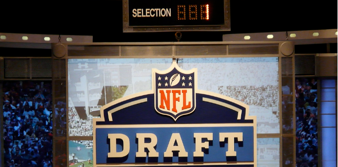

Detriot Lions: My opinion on the games vs the lions are we are going to split them so go 1-1. I think this because they are a very good team and we are also a very good team. Overall, I believe that this will be a very close series of games and both teams win one.
Minnestota Vikings: My opinion on the games vs the Vikings are we are also going to split them and go 1-1. This is because they always seem to play us well at home and we always play them well at their place.
Chicago Bears: My opinion on these bears games is we will go 2-0 vs them. They are not a good team and we have gone 12-0 vs them the last 12 times we have played them.
Arizona Cardinals: This game being at home is a guarranteed win they are not a good team overall
Houston Texans: This will be a very fun game to watch, the rookie of the year vs another up and comining QB with Jordan Love I belive the packers win a close one
Indianapolic Colts: This will be a easy win for the Packers unless something changes in the offseason with the colts
New Orleans Saints: This is a game we should win but I am saying we will lose a close one at home, I think we will not play good and lose
Miami Dolphins: We will win this game at home pretty comforablly because the Dolphins can not beat a good team
San Fransisco 49ers: We will win this game and it will be a slaughter, we will get revenage on losing to them in the postseason
Jacksonville Jaguars: We will win this game on the road it will be a close game but we will win in the end
LA Rams: We will lose this game on the road, the rams are a good team and this will not be a bad loss
Phila Eagles: We will lose to the Eagles on the road as well. That is a tough place to play
Seattle Seahawks: We will go into seattle and get a much needed win vs a good team
Tennesse Titans: We will win this game very comforablly, the titans are in a rebuild

NFL Draft:
The Packers have 10 picks in the draft, there are a couple glaring needs. The first glaring need is another inside linebacker. This is the case because of the cap hit that Campbell will have and we will probally cut him because of this. The second major position to fill is saftey. The problem with this is that the saftey class is very week in thsi draft. The next position that is most important I would say is running back. We have a starting running back however he is getting old and we need a backup to split the carries with him. I would say the last positions are offensive and deffensive line are very important to stock up on the big men and add more depth becausse more depth is always better.